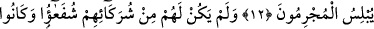

HEP O’NA
DÖNDÜRÜLECEKSİNİZ
11. Allah, ilkin mahlûkunu yaratır, (ölümden) sonra da bunu (yaratmayı),
tekrarlar. Sonunda hep O’na döndürüleceksiniz.
12. Kıyâmetin kopacağı gün, günahkârlar (ümitsizlik içinde) susacaklardır.
13. (Allâh’a koştukları) ortaklarından kendilerine hiçbir şefaatçı çıkmayacaktır.
Zaten onlar, ortaklarını da inkâr edeceklerdir.
14. Kıyâmet kopacağı gün, işte o gün (müminlerle inkârcılar) birbirlerinden
ayrılacaklardır.
15. Îman edip iyi işler yapanlara gelince, onlar, cennette nîmetlere ve sevince
mazhar olacaklardır.
16. İnkâr edenler, âyetlerimizi ve ahiret buluşmasını yalan sayanlar ise, işte onlar
azapla yüzyüze bırakılacaklardır.
17-18. Haydi siz, akşama ulaştığınızda (akşam ve yatsı vaktinde) sabaha
kavuştuğunuzda, gündüzün sonunda ve öğle vaktine eriştiğinizde Allâh’ı tesbih
edin (namaz kılın), ki göklerde ve yerde hamd O’na mahsustur.
19. Ölüden diriyi, diriden de ölüyü O çıkarıyor; yeryüzünü ölümünün ardından O
canlandırıyor. İşte siz de (kabirlerinizden) böyle çıkarılacaksınız.
“Allah, ilkin mahlûkunu yaratır,” Onları ilk olarak dünyâda yaratır. Bu nutfeden
yaratılan insandır. “(Ölümden) sonra da bunu (yaratmayı), tekrarlar.” Ölümden sonra
onları daha önce oldukları gibi diriler olarak yeniden yaratır. Yâni âhirette onlara hayat
verir ve yeniden diriltir. “Sonunda hep O’na” yâni O’dan başkasına değil, hesabınızı